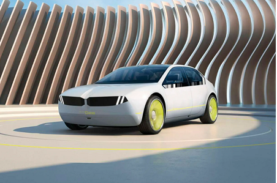
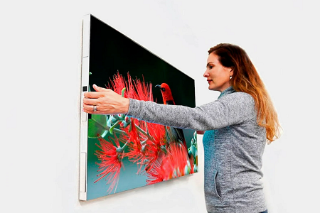

САМЫЕ ИНТЕРЕСНЫЕ И НЕОБЫЧНЫЕ НОВИНКИ С ВЫСТАВКИ CES-2023

BMW представила концепт-кар i Vision Dee, у которого корпус и даже колесные диски покрыты дисплеями E-ink — такие же экраны используются в электронных читалках. Панели не монохромные, а цветные, поэтому можно в любой момент изменить внешний вид машины.

Компания Displace создала полностью беспроводной телевизор, который работает примерно месяц от встроенного аккумулятора и не требует подключения к розетке. Его хватит на 180 часов. Модули съемные и заряжаются на специальной док-станции, которая идет в комплекте.